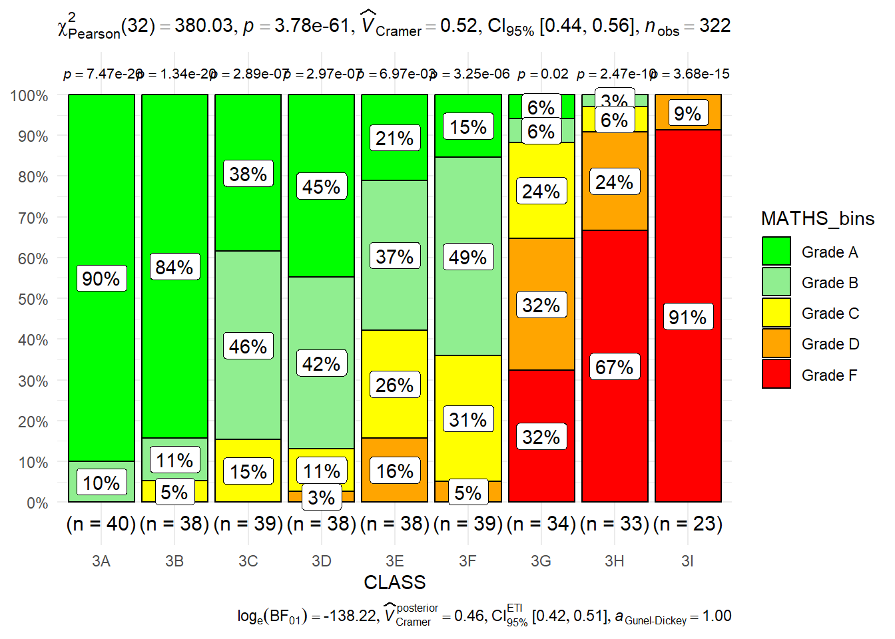

Code
pacman::p_load(ggstatsplot, tidyverse)With the assistance of ChatGPT
In this hands-on exercise, we will be exploring:
ggstatsplotggstatsplot extends ggplot2, integrating statistical test results directly into visualizations.
We will be using ggstatsplot and tidyverse packags.
pacman::p_load(ggstatsplot, tidyverse)In this exercise, Exam_data.csv will be used. The `read_csv() function from the readr package is used to import the dataset into R and store it as a tibble data frame.
exam <- read_csv("data/Exam_data.csv", show_col_types = FALSE)stat(exam)# A tibble: 322 × 7
ID CLASS GENDER RACE ENGLISH MATHS SCIENCE
<chr> <chr> <chr> <chr> <dbl> <dbl> <dbl>
1 Student321 3I Male Malay 21 9 15
2 Student305 3I Female Malay 24 22 16
3 Student289 3H Male Chinese 26 16 16
4 Student227 3F Male Chinese 27 77 31
5 Student318 3I Male Malay 27 11 25
6 Student306 3I Female Malay 31 16 16
7 Student313 3I Male Chinese 31 21 25
8 Student316 3I Male Malay 31 18 27
9 Student312 3I Male Malay 33 19 15
10 Student297 3H Male Indian 34 49 37
# ℹ 312 more rowsgghistostats() will be used to build a visual of one-sample test on English scores.
set.seed(1234)
gghistostats(
data = exam,
x = ENGLISH,
type = "bayes",
test.value = 60,
xlab = "English scores"
)
Default information: - statistical details - Bayes Factor - sample sizes - distribution summary
The Bayes Factor quantifies the strength of evidence in favor of one hypothesis over another, comparing the alternative hypothesis (H₁) to the null hypothesis (H₀).
It helps evaluate data in support of the null hypothesis while incorporating external information.
A common method for approximating the Bayes Factor is the Schwarz criterion.
The Bayes Factor (BF) is a positive number used to assess the strength of evidence for one hypothesis over another.
Refer here for one of the most common interpretations of Bayes Factor, first proposed by Harold Jeffereys (1961) and slightly modified by Lee and Wagenmakers in 2013.

ggbetweenstats()The code below, ggbetweenstats() is used to build a visual for two-sample mean test of Maths scores by gender.
ggbetweenstats(
data = exam,
x = GENDER,
y = MATHS,
type = "np",
messages = FALSE
)
Default information: - statistical details - Bayes Factor - sample sizes - distribution summary
ggbetweenstats()The code below used ggbetweenstats() to build a visual for One-way ANOVA test on English score by race.
ggbetweenstats(
data = exam,
x = RACE,
y = ENGLISH,
type = "p",
mean.ci = TRUE,
pairwise.comparisons = TRUE,
pairwise.display = "s",
p.adjust.method = "fdr",
messages = FALSE
)
Meaning of the symbol function of ggbetweenstats():
| Symbol | Meaning |
|---|---|
| ns | pairwise.display - only non-significant |
| s | pairwise.display- only significant |
| all | pairwise.display - everything |
| p | type - Parametric tests (default) |
| np | type - Non-parametric tests (e.g., Kruskal-Wallis, Wilcoxon) |
| r | type - Robust statistical tests (e.g., trimmed means ANOVA) |
| bayes | type - Bayesian analysis for comparisons |
ggscatterstats()The code below, ggscatterstats() is used to build a visual for significant test of correlation between MATHS and ENGLISH scores
ggscatterstats(
data = exam,
x = MATHS,
y = ENGLISH,
marginal = FALSE,
)
ggbarstats()The Maths scores is binned into 4-class variables using cut()
exam1 <- exam %>%
mutate(MATHS_bins =
cut(MATHS,
breaks = c(0,60,75,85,100))
)Next, ggbarstats() is used to build a visual for significant test of association
ggbarstats(exam1,
x = MATHS_bins,
y = GENDER)
Color gradient progresses smoothly from red to green, aligning with grade performance levels -
Observations:

exam1 <- exam %>%
mutate(MATHS_bins =
cut(MATHS,
breaks = c(0, 49, 59, 69, 79, 100), # 5 bins
labels = c("Grade F", "Grade D", "Grade C", "Grade B", "Grade A"), # Labels
right = TRUE) # Include upper bound in interval
)